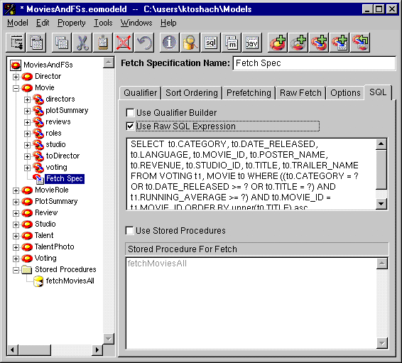
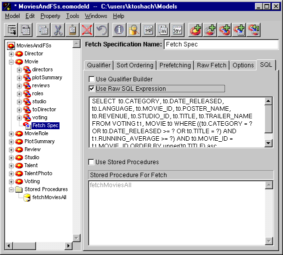

 Figure 47. Using a Custom SQL Expression or a Stored Procedure To use custom SQL, check the "Use Raw SQL Expression" box, and provide the SQL in the text field just below the box. If you've built a qualifier in the Qualifier Builder, this text field is initialized with the corresponding SQL. Checking the "Use Raw SQL Expression" box enables this text field so you can modify the text. Note that the Fetch Specification Builder isn't able to parse arbitrary SQL to produce a corresponding qualifier in the Qualifier Builder. To use a stored procedure, check the "Use Stored Procedures" box, and choose the stored procedure from the list just below the box. The stored procedure must be defined in the model.

Figure 47. Using a Custom SQL Expression or a Stored Procedure
Table of Contents Next Section
 Table of Contents
Table of Contents  Next Section
Table of Contents
Next Section
Table of Contents  Previous Section
Table of Contents Next Section
Previous Section
Table of Contents Next Section